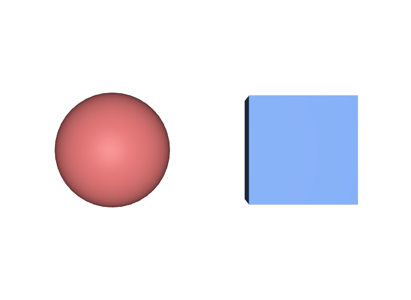

色に point3f を使う
3つの数が並ぶ型はいくつもあります。位置ならpoint3f、向きならvector3f、法線ならnormal3f、色ならcolor3fです。roleが違うと、ツールが座標変換をかけるかどうかの判断を誤ります。
STEP 11 · PROPERTIES
値の形と、その値が何を意味するかを型で固定します
今日これだけ
公式情報に基づく説明
Attributeには、定義された値の型が必ず一つあります。型はUSDAではdoubleやpoint3f[]のような名前で書き、PythonではSdf.ValueTypeNamesから取り出します。型は「値がいくつの数でできているか」という形だけでなく、「その数が位置なのか色なのか」という意味も決めます。この意味の部分をroleと呼びます。
USDA
def Sphere "Ball"
{
double radius = 0.6
color3f[] primvars:displayColor = [(0.85, 0.2, 0.2)] (
interpolation = "constant"
)
}
def Mesh "Panel"
{
point3f[] points = [(0, 0, 0), (1, 0, 0), (1, 1, 0), (0, 1, 0)]
}doubleは数が一つだけのscalar型です。color3fは3つの数を一つの値としてまとめたvector型で、丸括弧で囲みます。[]が付いたcolor3f[]やpoint3f[]はarray型で、その値が何個も並ぶことを表し、角括弧で囲みます。
結果

doubleのradius、立方体の大きさはdoubleのsize、色はどちらもcolor3f[]で決まっています。examples/lesson-22/value-types.usda / Apple USD Tools 0.25.2 のusdrecord（Hydra Storm・Metal）/ macOS 26.5.2・Apple M4Diagram
[] が付いた型 — 同じ値が並ぶPython
from pxr import Sdf, Usd, UsdGeom
stage = Usd.Stage.CreateNew("types.usda")
ball = UsdGeom.Sphere.Define(stage, "/World/Ball")
ball.CreateRadiusAttr(0.6)
print(ball.GetRadiusAttr().GetTypeName()) # double
print(ball.GetExtentAttr().GetTypeName()) # float3[]
prim = ball.GetPrim()
score = prim.CreateAttribute("academy:score", Sdf.ValueTypeNames.Double, custom=True)
score.Set(2.0)
for name in ("Point3f", "Vector3f", "Normal3f", "Color3f"):
t = getattr(Sdf.ValueTypeNames, name)
print(name, t, t.role, t.type.typeName)
# Point3f point3f Point GfVec3f
# Color3f color3f Color GfVec3f
stage.Save()最後のループが示すとおり、point3f・vector3f・normal3f・color3fは、中身がどれも同じGfVec3fです。違うのはroleだけです。型名の末尾にArrayを付けると配列型になり、USDAでは[]付きの名前になります。
USDA → Python mapping
USDA
double radius = 0.6↓Python
Sdf.ValueTypeNames.DoubleUSDA
color3f[] primvars:displayColor↓Python
Sdf.ValueTypeNames.Color3fArrayUSDA
point3f[] points↓Python
Sdf.ValueTypeNames.Point3fArrayBeginner notes
よくある間違い
3つの数が並ぶ型はいくつもあります。位置ならpoint3f、向きならvector3f、法線ならnormal3f、色ならcolor3fです。roleが違うと、ツールが座標変換をかけるかどうかの判断を誤ります。
Attributeの型は一つに決まっています。型を変えたい場合は、その名前のAttributeを作り直します。
color3f[]には、値が一つでもリストとして渡します。Pythonでもpv.Set(Gf.Vec3f(...))ではなくpv.Set([Gf.Vec3f(...)])です。
Glossary
doubleやintなど。matrix4dは座標変換に使う。[]が付く。@…@で囲む。Official references
確認日: